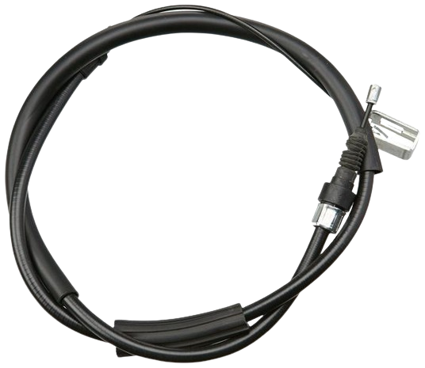
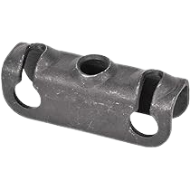
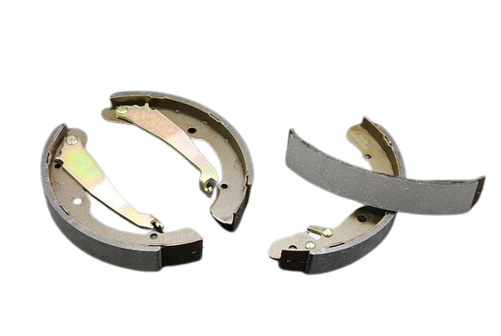
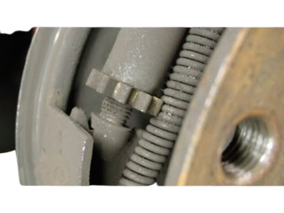

Gear shift knob, sometimes just called the shift knob or gear knob. It's the part of the gear shift lever that you grip and use to change gears in a manual transmission vehicle or select different driving modes in an automatic transmission vehicle. In a manual transmission vehicle, the gear shift knob typically has markings indicating the different gears, such as 1, 2, 3, 4, 5, and sometimes reverse. In an automatic transmission vehicle, the gear shift knob may have markings like P (Park), R (Reverse), N (Neutral), D (Drive), and sometimes additional modes like S (Sport) or L (Low). The shift knob is an essential part of the vehicle's interior, and its design can vary widely depending on the make and model of the car. Some shift knobs are basic and utilitarian, while others are designed for aesthetic appeal or enhanced grip and comfort.
KEY POINTS TO KNOW ABOUT GEAR KNOB
1. Parking: One of the primary purposes of the hand brake is to keep the vehicle stationary when parked. Engaging the hand brake prevents the vehicle from rolling, especially on inclines or uneven surfaces where the transmission's parking pawl might not be sufficient.
2. Emergency Brake: The hand brake serves as an emergency braking system if the primary hydraulic braking system fails. In such situations, pulling the hand brake lever can help slow down or stop the vehicle, providing an additional layer of safety.
3. Assists in Hill Starts: On manual transmission vehicles, the hand brake can be used to assist with hill starts. By engaging the hand brake while stopped on an incline, the driver can prevent the vehicle from rolling backward while smoothly engaging the clutch and accelerator.
4. Maintenance: The hand brake can also be used during maintenance tasks, such as brake inspections or wheel changes, to securely immobilize the vehicle.
5. Security: Engaging the hand brake adds an extra layer of security against theft. Even if a thief manages to start the vehicle, they may struggle to release the hand brake without the proper knowledge or tools.
Overall, the hand brake plays a crucial role in vehicle safety, providing stability when parked, serving as an emergency braking option, and aiding in specific driving scenarios such as hill starts. It's important for drivers to understand how and when to use the hand brake effectively for safe and responsible vehicle operation.
MECHANISM OF HAND BRAKES
The mechanism of a hand brake can vary depending on the type of vehicle and its braking system. However, in most cases, hand brakes operate using a mechanical linkage system. Here's a general overview of the typical mechanism of a hand brake:
1. Hand Brake Lever: The hand brake lever is the visible part of the mechanism inside the vehicle. It is usually located between the front seats, either on the center console or mounted on the floor. When the lever is pulled or engaged, it activates the hand brake system.
2. Cables: The hand brake lever is connected to a set of steel cables or rods that run underneath the vehicle. These cables transmit the force applied by the lever to the rear brakes. 
3. Equalizer or Lever Mechanism: Near the rear wheels, the cables are connected to an equalizer or lever mechanism. This component ensures that the force from the hand brake lever is distributed evenly to both rear wheels. 
4. Brake Shoes or Calipers: In vehicles with drum brakes, the hand brake mechanism activates brake shoes inside the brake drums attached to the rear wheels. When the hand brake is engaged, the brake shoes press against the inside of the drum, creating friction and stopping the rotation of the wheels. 
5. Release Mechanism: To release the hand brake, there is usually a button or lever mechanism near the hand brake lever that disengages the brake system when pressed or released. This allows the cables to slacken, releasing the tension on the brake shoes or calipers.
6. Adjustment Mechanism: Hand brakes typically have an adjustment mechanism to ensure that they engage and disengage properly. This mechanism may involve adjusting the tension of the cables or the position of the brake shoes or calipers. 
In vehicles equipped with disc brakes, the hand brake mechanism activates calipers that squeeze brake pads against a disc rotor attached to the rear wheels, achieving the same braking effect.
Overall, the hand brake mechanism utilizes a combination of mechanical components, including cables, levers, and brake shoes or calipers, to provide parking and emergency braking functions. Regular maintenance and adjustment are necessary to ensure that the hand brake operates effectively and safe
ACTIVATION OF HAND BRAKES
Activating hand brakes typically involves pulling a lever or pressing a button in a vehicle to engage the brake mechanism manually. Hand brakes, also known as emergency brakes or parking brakes, are secondary braking systems designed to secure a parked vehicle or to provide additional braking force in emergencies. The method of activating hand brakes may vary depending on the type of vehicle:
1. Manual Handbrake Lever: In most cars, especially older models and manual transmission vehicles, there is a handbrake lever located between the front seats, usually near the driver's seat. To activate the handbrake, you pull up on this lever firmly until it clicks into place, indicating that the brake is engaged.
2. Handbrake Button or Switch: Some modern cars have handbrake buttons or switches instead of traditional levers. Pressing or toggling this button or switch will activate the handbrake mechanism electronically.
3. Foot-operated Handbrake: In some vehicles, particularly trucks and heavy machinery, there might be a foot-operated handbrake. This is typically a pedal located to the left of the driver's footwell. Pressing down on this pedal will engage the handbrake.
4. Electronic Parking Brake (EPB): In newer vehicles, especially those equipped with electronic systems, there might be an electronic parking brake control. This could be a button or switch located on the dashboard or center console. Activating it will engage the electronic parking brake.
Regardless of the method used, activating the handbrake is crucial for ensuring the vehicle remains stationary when parked on an incline or during emergencies. It's important to follow the specific instructions provided in the vehicle's manual to ensure proper operation and safety.
USE OF HAND BRAKE IN EMERGENCIES
Hand brakes, also known as emergency brakes or parking brakes, play a crucial role in emergencies by providing an additional means of stopping a vehicle if the primary braking system fails or is compromised. Here's how hand brakes can be used in emergencies:
1. Secondary Brake System: Hand brakes serve as a secondary braking system independent of the primary hydraulic braking system in vehicles. In case of brake failure due to hydraulic system malfunction or loss of brake fluid, the hand brake can be employed to slow down or stop the vehicle.
2. Stabilizing the Vehicle: If the vehicle experiences a sudden loss of control, such as skidding or swerving, activating the hand brake can help stabilize the vehicle. Applying the hand brake judiciously can assist in regaining control by reducing speed and preventing further loss of traction.
3. Stopping on Steep Inclines: In emergency situations on steep inclines, particularly when the primary brakes are insufficient to hold the vehicle stationary, the hand brake can be engaged to prevent the vehicle from rolling backward.
4. Collision Avoidance: When confronted with an imminent collision or obstacle, applying the hand brake can help reduce the vehicle's speed quickly, potentially mitigating the impact or avoiding the collision altogether.
5. Preventing Runaway Vehicles: In scenarios where the vehicle's accelerator becomes stuck, activating the hand brake can assist in slowing down or stopping the vehicle, preventing it from becoming a runaway vehicle.
It's important to note that while hand brakes can be effective in emergencies, they require proper handling and technique to ensure safety
* Apply the hand brake gradually and avoid sudden jerky movements to prevent loss of control.
* Coordinate the use of the hand brake with steering and other driving maneuvers.
* Be aware of the road conditions and surroundings to determine the most appropriate use of the hand brake.
* Regularly maintain and inspect the hand brake system to ensure proper functioning.
* Drivers should familiarize themselves with the specific hand brake operation of their vehicle and practice emergency braking techniques in a safe environment to be prepared for unexpected situations on the road.
* Additionally, seeking professional assistance to address any brake system issues or malfunctions is essential for ensuring vehicle safety.
USE OF HAND BRAKES
Using hand brakes properly is crucial for safe driving and parking. Here are some usage tips on hand brakes:
1. Engage Properly: When parking on a slope or even on flat ground, engage the hand brake fully to prevent the vehicle from rolling. Pull the hand brake lever firmly or activate the electronic hand brake system until it locks securely in place.
2. Apply in Neutral or Park: Engage the hand brake only after shifting the transmission into neutral (for manual transmission) or park (for automatic transmission). This prevents unnecessary strain on the transmission components and ensures the vehicle is securely parked.
3. Release Before Driving: Before driving off, remember to release the hand brake completely. Failure to release the hand brake fully can damage the braking system and cause excessive wear on the brake pads or shoes.
4. Use in Emergency Situations: In emergencies, such as brake failure or loss of control, apply the hand brake gradually to assist in slowing down or stabilizing the vehicle. Avoid sudden or jerky movements when using the hand brake in emergency situations to maintain control of the vehicle.
5. Avoid Overuse: While hand brakes are useful for parking and emergency situations, avoid using them excessively while driving. Rely on the vehicle's primary braking system for regular braking during normal driving conditions.
6. Practice on Slopes:If you're not accustomed to using hand brakes on slopes, practice parking on inclines in a safe and empty area. This helps you get a feel for how much force is needed to engage the hand brake effectively and ensures you can park confidently on slopes when necessary.
7. Check for Frozen Cables: In cold weather conditions, hand brake cables can freeze, preventing proper operation. Before driving off in freezing temperatures, check that the hand brake releases smoothly and doesn't feel stiff or frozen. If the hand brake is frozen, gently rocking the vehicle back and forth may help loosen the cables.
8. Regular Maintenance: Maintain the hand brake system regularly by inspecting cables, linkage, and pads for wear and damage. Lubricate moving parts as needed and adjust the hand brake tension to ensure it operates effectively.
By following these usage tips, you can use hand brakes safely and effectively in various driving and parking situations, enhancing vehicle control and safety.
MENTAINANCE OF HAND BRAKE
Maintaining hand brakes is essential for ensuring they function effectively and reliably when needed. Here are some maintenance tips for hand brakes:
1. Regular Inspection: Periodically inspect the hand brake system for any signs of wear, damage, or corrosion. Check the hand brake lever, cables, and linkage for proper operation and integrity. Look for any loose or worn components that may affect the hand brake's performance.
2. Adjustment: Over time, hand brake cables can stretch, leading to decreased effectiveness. Adjust the hand brake mechanism as necessary to maintain proper tension. Refer to the vehicle's service manual for instructions on how to adjust the hand brake properly.
3. Lubrication: Lubricate moving parts of the hand brake system, such as cables and linkage, to ensure smooth operation. Use a suitable lubricant recommended by the vehicle manufacturer to prevent corrosion and reduce friction.
4. Brake Pad Inspection: If the hand brake is integrated with the rear brake calipers, inspect the brake pads regularly for wear. Replace worn brake pads to maintain proper braking performance and ensure the hand brake can hold the vehicle securely.
5. Parking Brake Shoes: In vehicles equipped with drum brakes for the hand brake, inspect the parking brake shoes for wear and damage. Replace worn or damaged parking brake shoes to maintain adequate braking force.
6. Brake Fluid Inspection: If the hand brake is operated electronically or hydraulically, check the brake fluid level regularly. Ensure the brake fluid is clean and topped up to the recommended level to ensure proper operation of the hand brake system.
7. Testing:Test the hand brake regularly to ensure it holds the vehicle securely when engaged. Park on a slight incline and apply the hand brake to verify that the vehicle remains stationary. If the vehicle rolls, it may indicate a problem with the hand brake that requires attention.
8. Professional Service:If you encounter any issues with the hand brake or are unsure about its condition, consult a qualified mechanic or technician for inspection and service. They can diagnose any problems and perform necessary repairs or adjustments to ensure the hand brake functions correctly.
By following these maintenance practices, you can help ensure that your hand brake operates effectively and provides reliable braking performance when needed. Regular maintenance not only enhances safety but also prolongs the lifespan of the hand brake components.